이번에는 현재 게임을 출발점으로 삼았습니다.
왼쪽은 새로 캡처한 실제 실행 화면, 오른쪽은 그 화면의 상태와 기능을 유지해 만든 시안입니다. 원본 레퍼런스는 산의 질량감·깊이·밝은 로우폴리 표현·페인트 대비에만 사용했습니다. 이 문서는 시각 방향 검토용이며 구현 계획서가 아닙니다.

01. 스테이지 선택
30개 모두 개방, 10개 단위 페이지, 선택한 스테이지의 실제 정보만 표시.
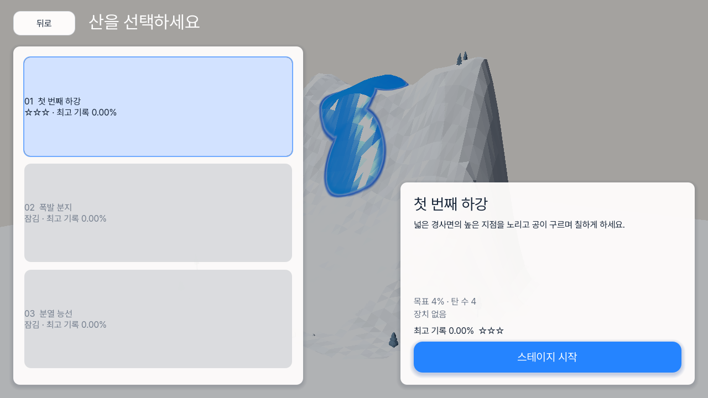
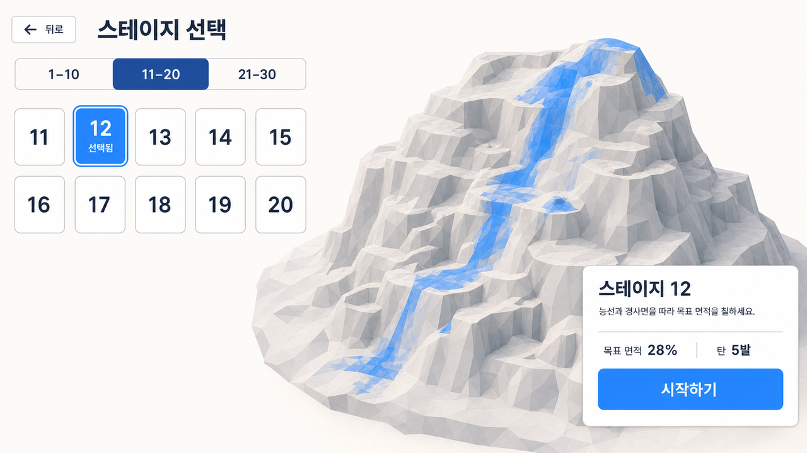
02. 지형 확인
목표와 특수 지형은 하단 한 줄로 압축하고 산을 가리지 않음.
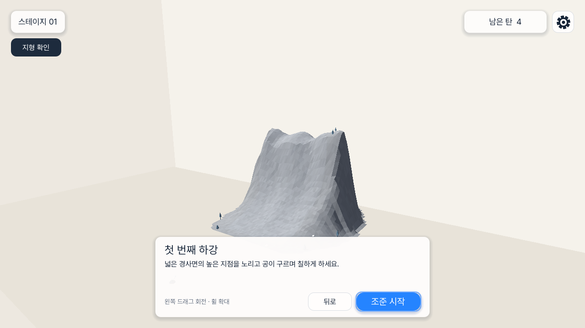
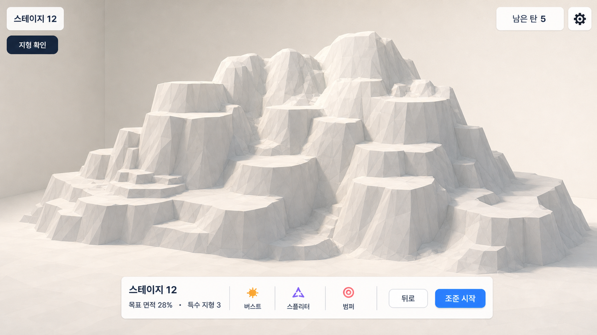
03. 조준
좌측 세로 면적, 좌하단 조준, 중앙 하단 발사, 상단 상태의 기존 계약을 강화.
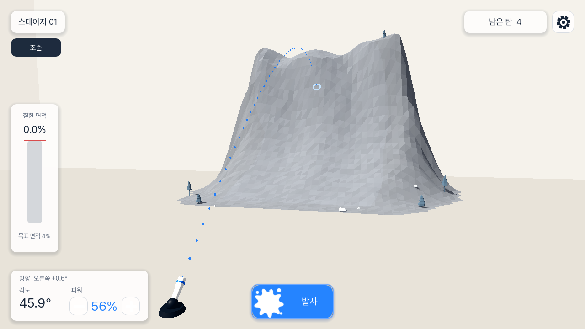
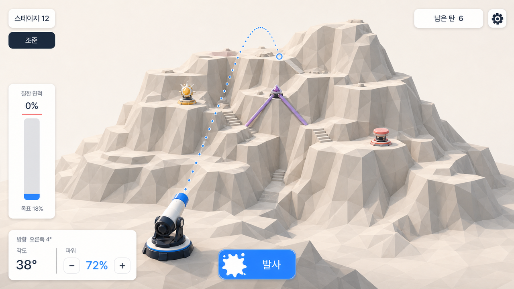
궤적은 첫 실제 충돌점까지 표시합니다. 착지 뒤의 페인트 경로는 예측하지 않습니다.
04. 비행·굴림 중 연속 발사
이전 공이 굴러 칠하는 동안에도 다음 조준과 발사를 즉시 허용하는 화면 계약.
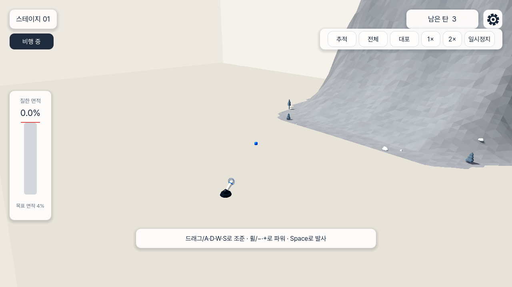
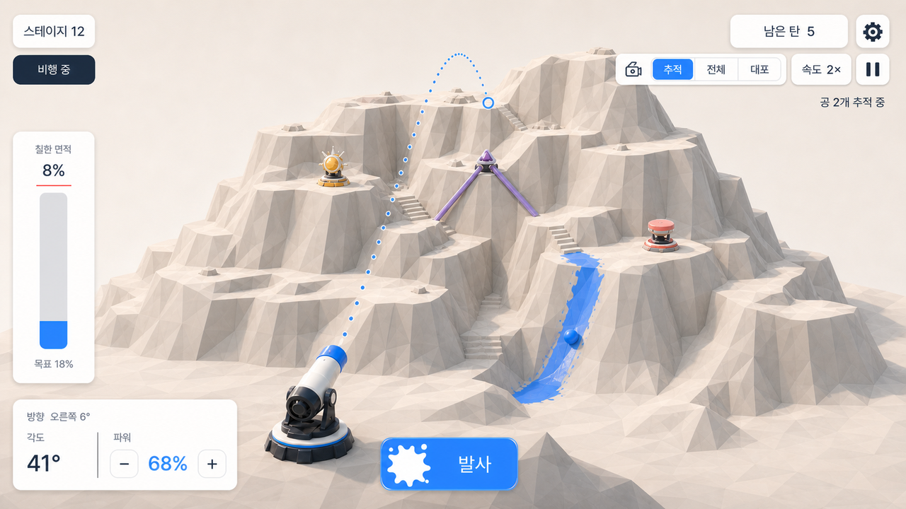
카메라는 `추적 / 전체 / 대포` 한 그룹, 속도는 `속도 2×` 한 컨트롤로 정리했습니다. 공과 도색 폭의 시각적 비율도 함께 제안합니다.
05. 일시정지
다시 시작은 이 메뉴에 두고, 계속하기를 가장 강한 동작으로.
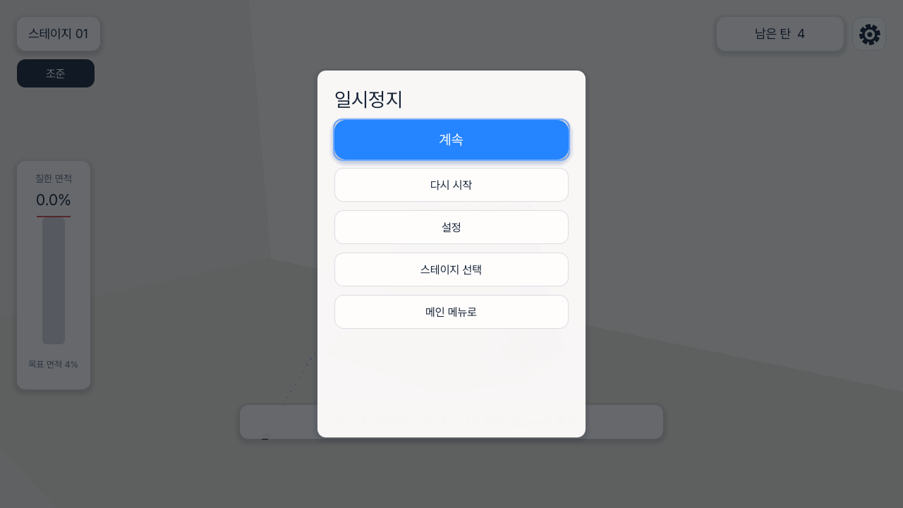
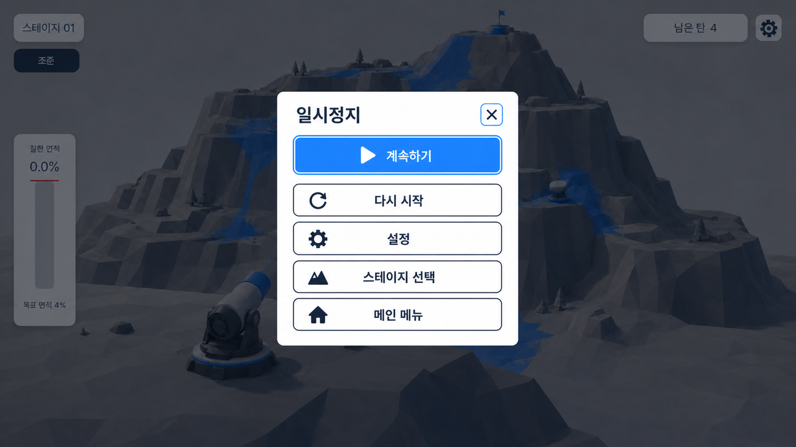
06. 설정
일시정지의 자식 화면. 왼쪽 분류와 한 개의 활성 설정 열.
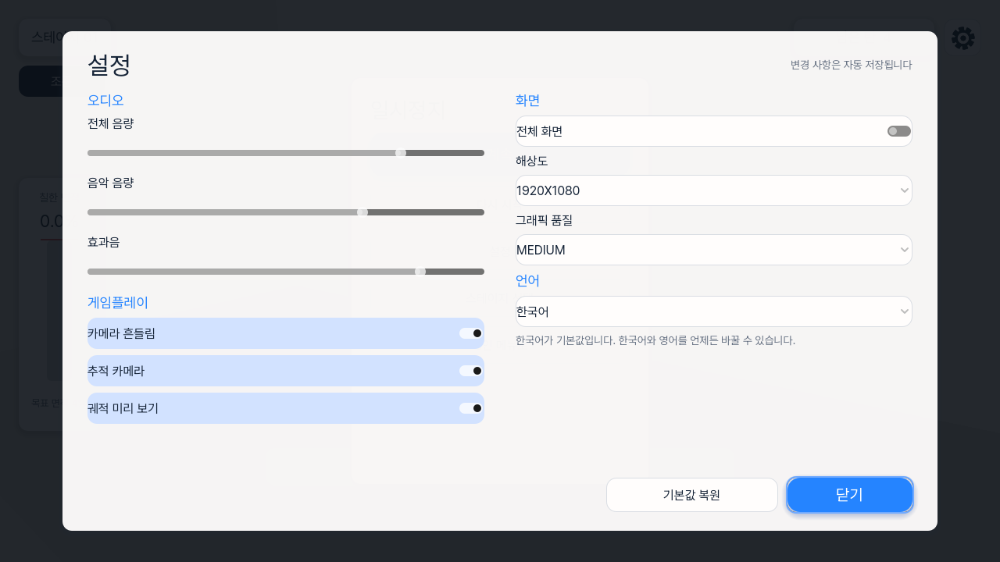
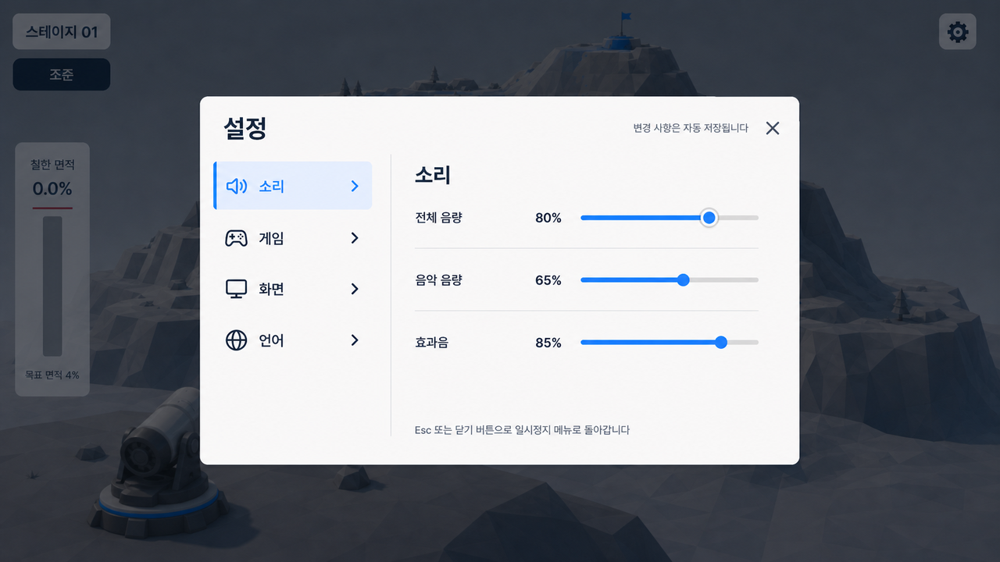
07. 스테이지 성공
칠해진 산은 계속 보이고, 다음 스테이지를 우선 동작으로.
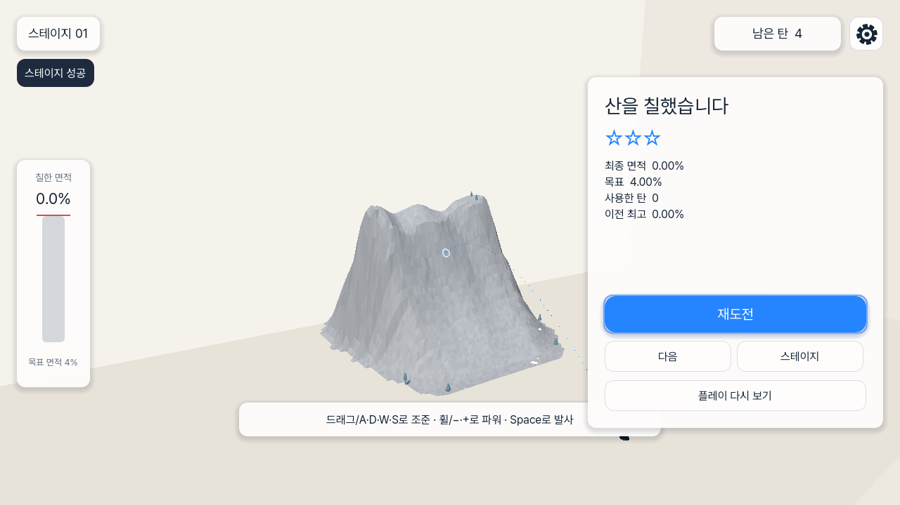
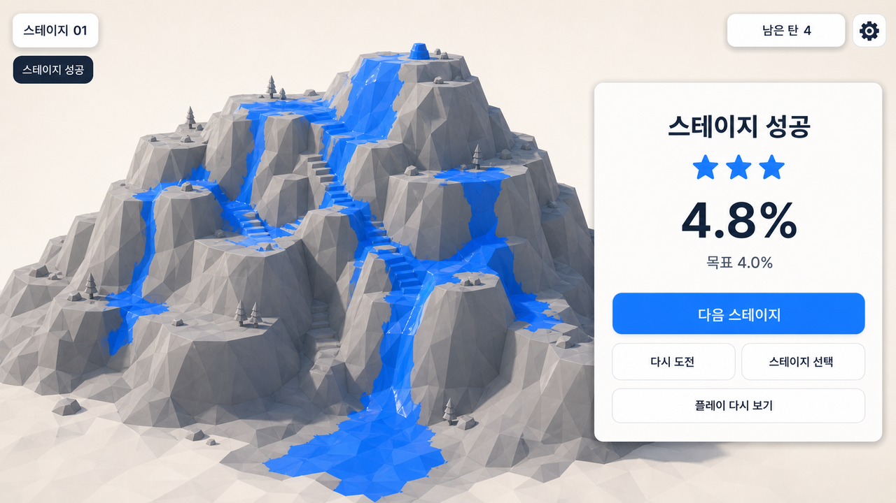
08. 목표 미달
부족한 수치를 바로 설명하고 다시 도전을 유일한 주 동작으로.
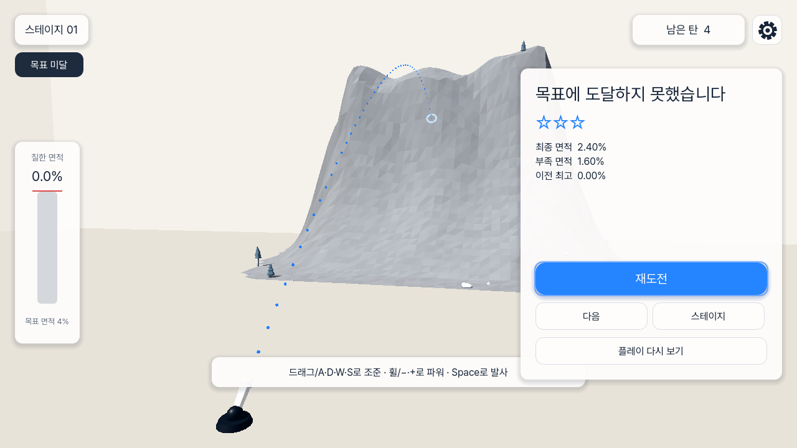
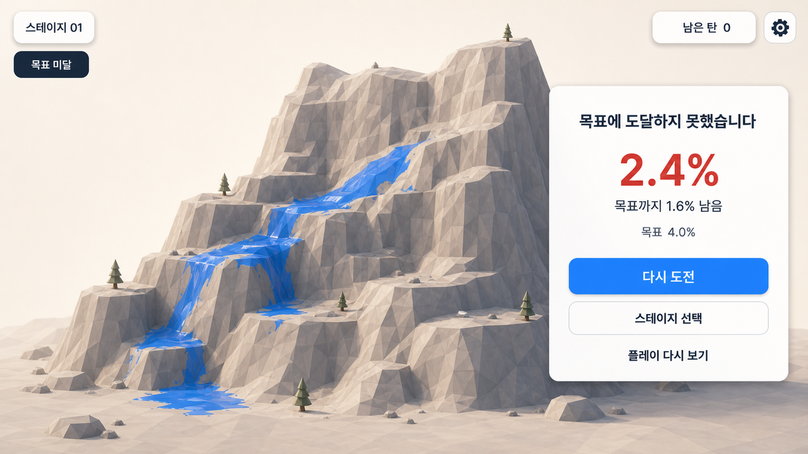